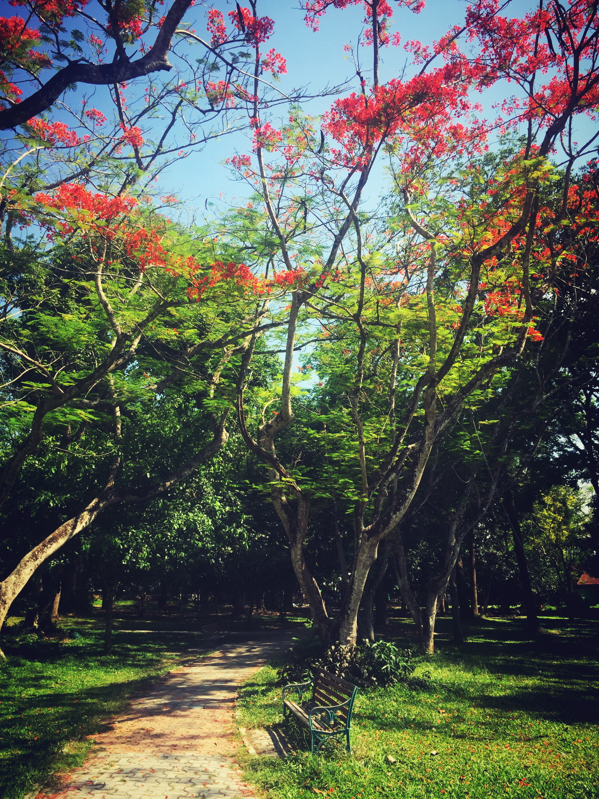

The Flame Tree (หางนกยูงฝรั่ง)

ลักษณะทางพฤกษศาสตร์
เป็นไม้ยืนต้นขนาดกลาง ต้นโตเต็มที่สูงราว 12 - 18 เมตร เรือนยอดแผ่กว้างทรงกลมคล้ายร่ม แผ่กิ่งก้านออกคล้ายก้ามปู แต่มีขนาดเล็กกว่า ลำต้นเกลี้ยง เปลือกสีน้ำตาลอ่อนอมขาวถึงสีน้ำตาลเข้ม โคนต้นเป็นพูพอน มักมีรากโผล่พ้นดินออกโดยรอบเมื่อโตเต็มที่ ใบเป็นใบประกอบขนนกสองชั้นเรียงเวียนสลับและมีใบย่อยเรียงตรงข้ามกัน ขนาดใบย่อยใกล้เคียงกับใบย่อยของมะขาม แผ่นใบรูปขอบขนาน ปลายกลมโคนเบี้ยว ผิวใบเกลี้ยง เป็นพืชผลัดใบ[3] ในประเทศไทยมักผลัดใบในฤดูร้อนช่วงเดือนมีนาคมถึงมิถุนายน
ออกดอกดกและทิ้งใบทั้งต้น เหลือแต่ดอกบานสะพรั่งดูงดงามเป็นพิเศษ ช่อดอกออกตามปลายกิ่ง และตามง่ามใบใกล้ปลายกิ่ง ประกอบด้วยกลีบดอก 5 กลีบ และเกสรตัวผู้ยาวงอนออกมาเหนือกลีบดอก กลีบดอกหางนกยูงความจริงประกอบด้วยสี 2 สี คือสีแดงและสีเหลือง แต่ส่วนใหญ่จะมี 2 สีนี้อยู่ด้วยกันจึงเห็นเป็นสีแสด ดอกใดที่สีเหลืองมากกว่าก็เป็นสีแสดออกเหลือง ดอกใดสีแดงมากกว่าก็เป็นสีแสดออกแดง แต่ก็มีหางนกยูงบางต้นออกดอกสีแดงแท้ๆ และบางต้นออกดอกสีเหลืองบริสุทธิ์ซึ่งหาได้ยาก โดยทั่วไปจึงพบแต่หางนกยูงฝรั่งสีแสด ทั้งนี้ผลของหางนกยูงฝรั่งเป็นฝักแบนโค้งรูปดาบ และเมล็ดเรียงตามขวาง[4]
การขยายพันธุ์ใช้เมล็ดเป็นหลัก และสามารถใช้วิธีติดตา ต่อกิ่ง เสียบยอด (ที่จะทำให้ไม่กลายพันธุ์) และขึ้นได้ดีในดินทั่วไป
